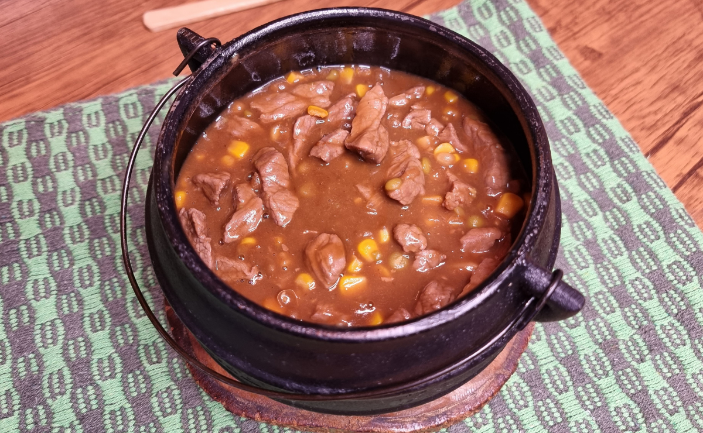

Picadinho de carne na cerveja
Ingredientes
- 500 gramas de alcatra picada
- 1 xícara de chá de cerveja preta
- 1 lata de milho verde (sem a água)
- 1 lata de ervilha
- 2 colheres de sopa de manteiga
- 1 e ½ cebola picada
- 2 dentes de alho picados
- 2 folhas de louro
- Sal e pimenta-do-reino a gosto
- Páprica picante a gosto
Modo de preparo

Para facilitar, reúna todos os ingredientes já nas medidas corretas com antecedência
Tempere a carne com páprica, sal, e pimenta
Em uma panela, derreta a manteiga e coloque as folhas de louro
Adicione a cebola e frite até ficar bem douradinha
Acrescente o alho, a carne e deixe refogar bem
Coloque a cerveja, o milho, a ervilha, misture bem e deixe dar uma reduzida
Agora é só servir!